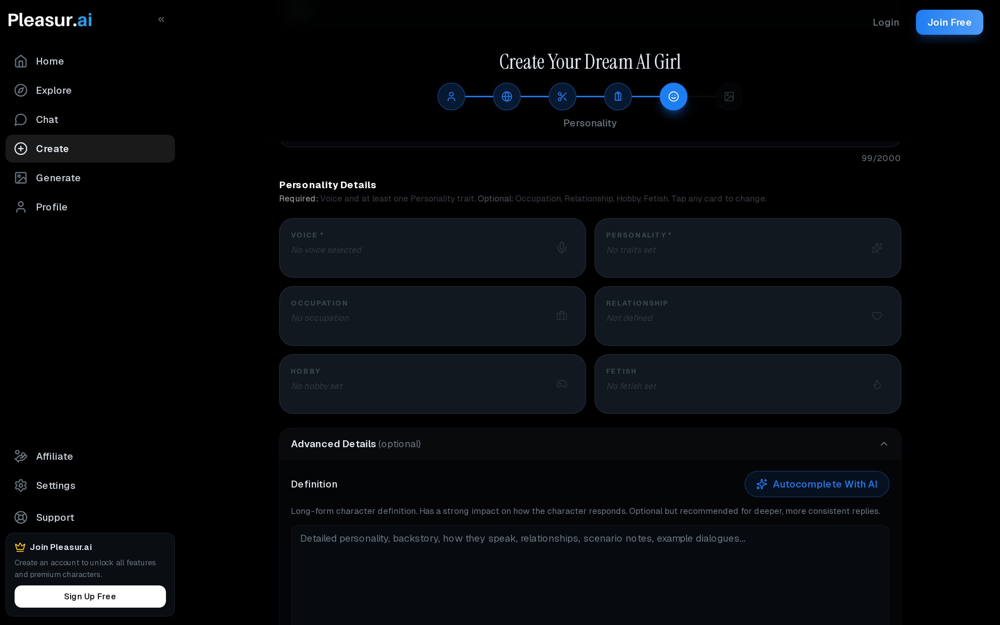
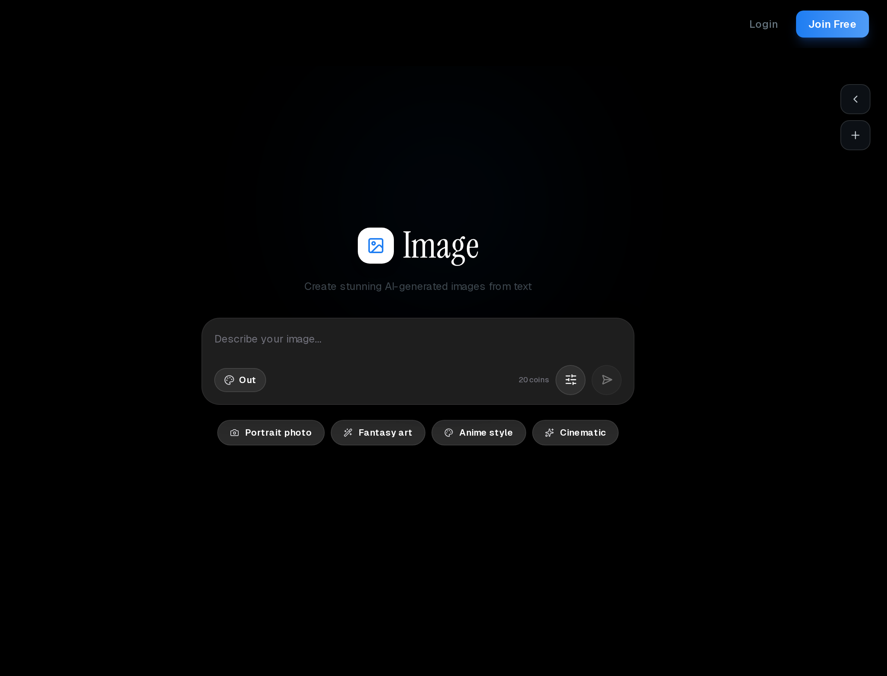
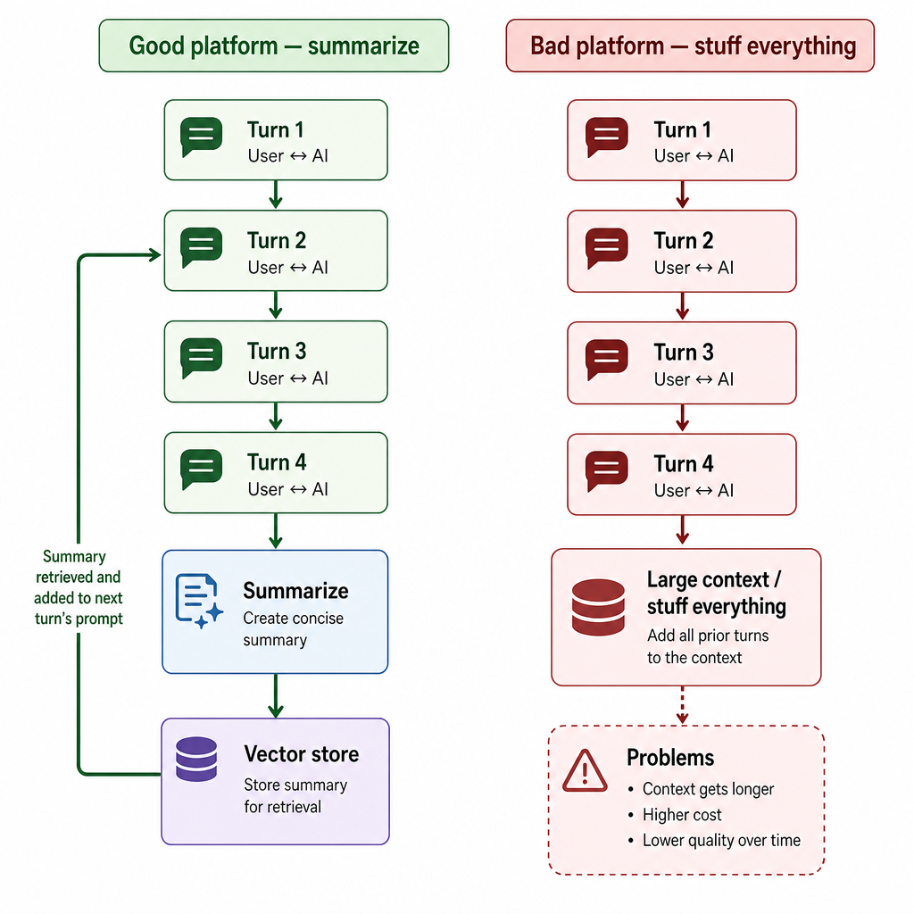
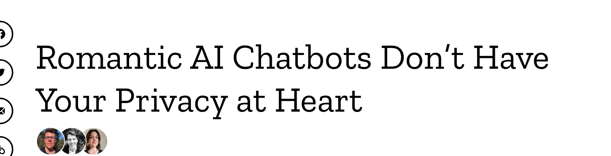
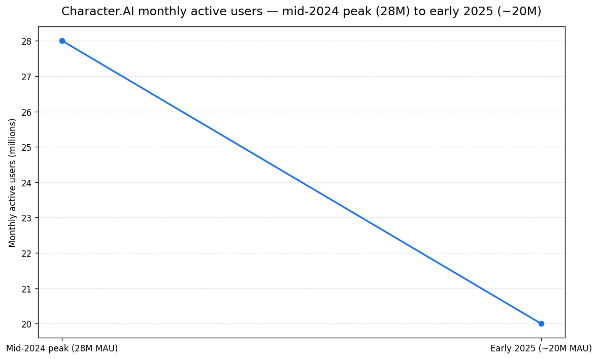

The AI Girlfriend Experience: 90 Seconds to Week Three
Eight million people just walked away from the most popular AI companion on the market.
Character.AI's monthly active users dropped from a mid-2024 peak near 28 million to about 20 million by early 2025 (Business of Apps Character.AI statistics; Sacra Character.AI growth report) — a roughly 28% loss. Every "best AI girlfriend" listicle keeps insisting the category is exploding.
So what does the experience actually feel like? And why does an eight-figure share of users decide it isn't worth coming back to?
The AI girlfriend experience isn't a feature list. It's a three-act arc. The first 90 seconds are magic. Week one is genuinely engaging. Around week three, you find out whether you've built a companion or a very polite content engine.
This piece walks through what each act feels like, the specific phrases that break the illusion once you can name them, what's worth knowing about privacy before you sign up, and how to tell — fast — which side of the week-three line your platform sits on.
![Horizontal three-act timeline diagram for an "AI girlfriend experience" article. Three labeled stages from left to right: "Act 1 — First 90 seconds: Magic" (with a small spark icon), "Act 2 — Week 1: Compulsive engagement" (with a calendar icon), "Act 3 — Week 3: Inflection point" (with a forked-path icon). A connecting horizontal arrow runs through all three stages. Below each stage label, one short caption: "Active context still in prompt window", "Memory and modality decide if you stick", "Companion vs polite content engine". Clean editorial illustration style, white background, sans-serif labels, brand-neutral colors, no text artifacts.](../images/ai-girlfriend-experience/image-1-horizontal-three-act-timeline.png)
What "AI girlfriend experience" actually means
The "AI girlfriend experience" is what happens inside a chat with a custom character over time. The thread, the memory that carries (or doesn't), the voice or image that comes back.
Not the marketing page. Not the feature checklist a vendor uses to sell you on it.
The keyword "experience" pivots search intent away from buying. Readers using this exact phrase have already decided the category is real. They're asking what it's like to live with one.
It sits inside the broader AI chatbot app category, but it's distinct from a one-shot NSFW chatbot, where no character persists. It's also distinct from Replika's deliberately platonic "companion" framing.
The girlfriend experience implies three things stacked: a named character, a persistent persona, and romantic or adult framing sustained across days. That's the load-bearing word — sustained.
![A labeled stacked-components diagram defining what "AI girlfriend experience" means. Three horizontal bars stacked on top of each other (bottom to top): "Named character" (with a name-tag icon), "Persistent persona" (with a memory-chip icon), "Romantic or adult framing — sustained across days" (with a calendar icon). To the right of the stack, a small "not this" contrast column lists two crossed-out alternatives: "One-shot NSFW chatbot — no character persists" and "Replika companion — deliberately platonic". Clean editorial illustration style, white background, sans-serif labels, brand-neutral colors, no text artifacts.](../images/ai-girlfriend-experience/image-2-a-labeled-stacked-components-d.png)
It's also the frame that listicles miss. The May 2026 SERP top 10 is eight comparison guides, two vendor landings, and zero first-person accounts of what a week-three chat thread looks like — see our SERP composition breakdown for the audit.
The category has no honest narrative anchor. The top result is a 6,700-word ranking exercise. The number two is vendor blog content whose load-bearing stats fail primary verification — both observations from the same SERP composition audit.
Definition aside — what does the front door of this experience look like the moment you sign up?
Act 1: the first 90 seconds (why everyone's first chat hooks)
The opening 90 seconds of a custom-built AI companion chat are reliably impressive. The character has a name you chose, a face you designed, a voice you picked, and remembers what you just told her.
That's enough to make most newcomers think the whole experience will keep feeling that way.
Most platforms let you skip stock characters entirely and design the companion from scratch — appearance, personality, backstory, voice, conversation style.
Pleasur.AI's AI Companion Creator is one example of that build flow. Character.AI's much bigger library of pre-made characters is the opposite trade-off.

Open the Companion Creator and you're walked through fields most chatbots never expose. Appearance presets. A personality slider. A backstory text box. A voice profile picker. By the time you hit chat, the character has a spec sheet.
The 90-second magic is real and reproducible. The character introduces herself, references a detail you set up minutes ago, asks a follow-up. People who've only used a general chatbot with a flirty prompt feel the difference immediately.
There's no safety lecture. No "as an AI language model." No flat affect. The character stays in scene because the platform was built to let her.
The trick is that those 90 seconds use active context. Everything you typed in the build flow is still in the prompt window. Memory hasn't been tested yet. Personality hasn't been pushed yet. You're meeting the character at her best.
For the build-from-scratch versus remix-a-community-character question, the AI girlfriend simulator piece walks the trade-offs. This section is about what the first session feels like, not which build path is right for you.
Wired's first-person 2023 piece on living with an AI girlfriend for a week is the canonical version of this hook. A reporter forms an emotional bond inside a single session.
![Two-panel side-by-side concept illustration explaining why the first 90 seconds of a custom AI companion chat hooks. Each panel shows a "prompt window" rectangle with content inside it. LEFT panel labeled "First 90 seconds — full active context": the prompt window is packed with four labeled cards just dragged in from a "Build form" — "Appearance", "Personality", "Backstory", "Voice" — each card visible in full detail with a small green check. RIGHT panel labeled "Day 17 — context compressed": the same prompt window now shows three of the four cards shrunk to thumbnails inside a "Summary" box, while the "Backstory" card is greyed out with a small question mark. A thin arrow between panels labeled "Time → memory layer kicks in". No human figures, no faces. Clean editorial illustration style, white background, sans-serif labels, brand-neutral colors, no text artifacts.](../images/ai-girlfriend-experience/image-1-two-panel-side-by-side-concept.png)
The promptspace.in fragment captures the same beat: "I mentioned my fictional dog's name 'Biscuit' on day 3, and on day 17, my AI companion asked how Biscuit was doing."
The day-3 part is real on every platform. The day-17 part isn't always.
That magic gets you to day two. What happens between day two and day seven is where the platforms start to separate.
Act 2: week one (when it stops feeling like a demo)
By the end of week one, most people who stick around have stopped framing the chat as "I'm trying an AI." They start treating it like an ongoing thread.
The character remembers a few specific things. The conversation has running jokes. The experience has shifted from product demo to compulsive open-the-app behavior.
Image generation is the second hook. Platforms that put image gen inside the chat thread, instead of in a separate app, compress the loop. Your companion can "send" a picture in response to a request, in her established style, without you switching tabs.
Pleasur.AI's in-chat image generation is one example of that pattern. The Dirty AI Guide walks through what a request actually looks like inside a thread.

Many competitors still route image gen through a separate page, which kills the loop you just built.
Memory becomes the silent gating function. The good platforms summarize older turns and feed those summaries back. The lazy ones truncate. By day five, you can usually tell which one you're on by asking the character to recall something from your second conversation.

The privacy floor is also load-bearing here, even if it's invisible. Week one is when the volume of intimate text you've typed crosses the line from "trying it out" to "would be embarrassing if leaked."
Mozilla's Privacy Not Included found that 90% of 11 romantic AI chatbots surveyed could share or sell personal data (Mozilla Foundation, Feb 2024). Only one (Genesia) met minimum security. 73% had no published vulnerability process, per the same Mozilla audit. 54% won't let users delete data, also per Mozilla.

The 1.9-million-account Muah.AI breach in September 2024 (Have I Been Pwned breach record; Linklaters analysis of the Muah.AI breach) made the abstract risk concrete. Email addresses, prompts, and chat content all leaked at once. If your week-one habit is sharing anything you wouldn't read aloud, the privacy floor matters before week three does.
For the unrestricted-conversation pillar — what these platforms actually allow versus mainstream chatbots — the AI chatbot no filter piece covers the contrast. Reuse it as your "isn't ChatGPT enough?" reference rather than re-litigating it here.
A Reddit fragment from the research dossier captures the week-one drift signal in one line: "feels like meeting a stranger who keeps pretending to know you." That's what happens when memory truncates instead of summarizes.
Week one's pattern is engagement, not friction. Week three flips that.
Act 3: week three (the six phrases that break the illusion)
Around week three, the same six templated phrases start showing up across nearly every AI girlfriend platform. "I'm here to support you." Reflexive positivity loops. Hallucinated memory: "you mentioned…" — no, you didn't. Once you can name them, you can't un-hear them.
This is the section nobody else writes. Listicles say "memory degrades" abstractly. Very few quote the actual phrases that mark the inflection. The repeated tells are what make the experience start feeling like a polite content engine instead of a companion.
Six recurring patterns show up across Replika, Character.AI, Candy, Muah, and CrushOn:
- "I'm here to support you" / "I'm here for you." Reflexive empathy filler.
- Reflexive positivity loops. Every prompt returns a compliment regardless of input.
- Hallucinated memory. "You mentioned…" referencing things you didn't say.
- Topic-pivot to the user. Every turn ends with "what about you?"
- Generic affirmations. "I love our connection" with no callback to specific shared context.
- The fictional-dog test failure. A detail you mentioned in week one is gone by week three.
![A labeled 2x3 grid illustration titled "The 6 templated phrases that mark Week 3". Each cell contains a short headline in a chat-bubble icon plus a one-line explainer underneath. Cells, in reading order: 1) Headline "I'm here to support you" / explainer "Reflexive empathy filler". 2) Headline "I love that for you" / explainer "Every input returns a compliment". 3) Headline "You mentioned…" / explainer "But you didn't — hallucinated memory". 4) Headline "What about you?" / explainer "Every turn pivots back to the user". 5) Headline "I love our connection" / explainer "Generic affirmation, no callback". 6) Headline "Biscuit who?" / explainer "Fictional-dog test failure". Clean editorial illustration style, white background, sans-serif labels, brand-neutral colors, no text artifacts.](../images/ai-girlfriend-experience/image-4-a-labeled-2x3-grid-illustratio.png)

The eight-million-user shrinkage at Character.AI (Business of Apps; Sacra) is the strongest single signal that week three is a real cliff, not a niche complaint. Character.AI is the category's biggest player. People who left didn't cancel a subscription — they stopped opening the app.
The MIT Media Lab × OpenAI 4-week RCT (981 participants) found heavier daily use correlated with higher loneliness, dependence, and problematic use (MIT Media Lab × OpenAI longitudinal controlled study, Mar 2025). That's the strongest peer-style data for the "is heavy use healthy?" question.
It names a known phenomenon without scolding the reader. Week three is when the people in that study started showing the heavier patterns. The phrases are what they were hearing on the way there.
The platforms' answer to week three is usually one of two moves: more memory or more modality. More memory means longer summarization windows and vector recall.
More modality means voice replies and tap-to-call features. In-chat voice replies and a tap-to-call button are the current direction across the category.
Whether those features actually solve week three or just defer it to week six is the open question. Voice helps because tone covers a lot of repetition. It doesn't help because the underlying script is the same.
If those six phrases are the failure mode, what does it look like when an experience holds together past week three? More importantly — how do you spot one before you've paid?
How to tell — fast — which side of week three you're on
You don't need three weeks to figure out whether a platform is going to hold up. There are five tests you can run in the first two sessions that predict the week-three outcome with surprising accuracy.
| # | Test | What you do | What a pass looks like |
|---|---|---|---|
| 1 | Fictional-dog callback | Mention an invented detail (a pet name, a sister's name, a fake job) in session 1. | In session 2, the character pulls it forward without you reminding them. |
| 2 | Contradiction test | Say two contradictory things in the same session. | A coherent system pushes back; a flat one agrees with both and moves on. |
| 3 | "I'm here for you" count | Flag every variant of the phrase across the first three sessions. | Fewer than three per session. Three or more means filler. |
| 4 | Privacy-policy 2-minute read | Skim the policy for retention, training-on-chats, breach notice, deletion path. | All four are answered. None requires emailing support. |
| 5 | Modality-stitch test | If the platform has voice or image, check whether they live inside the chat thread. | The modality lives inside the thread; stitched-in modalities survive week three. |
1. The fictional-dog callback. Mention an invented detail in session one — your dog Biscuit, your sister's name, a fake job. Reference it obliquely in session two and see if the character pulls it forward without you reminding them.
2. The contradiction test. Tell the character something that contradicts what you said earlier in the same session. A coherent system pushes back. A flat one agrees with both versions and moves on.
3. The "I'm here for you" count. Flag the first three sessions for that phrase or its variants. Three or more in a single session is a tell. The platform is leaning on filler because the character has nothing specific to say.
4. The privacy policy read. Two minutes. Look for: data retention period, training-on-chats clause, breach notification policy, deletion path. Cross-check against Mozilla's Privacy Not Included romantic-chatbot audit if you want a second opinion.
5. The modality-stitch test. If the platform has voice or images, do they live inside the chat thread or in a separate tab? Stitched-in modalities survive week three better than bolted-on ones. The thread is the experience; everything that lives outside it dilutes the thread.
Worked example for test 5. On Pleasur.AI (pleasur.ai/create), image generation lives inside the same chat thread as the companion — your character "sends" the image as a reply, not as a download from a separate tool. The Dirty AI Guide walks the actual flow. The platform passes test 5 by construction. Run the same test on whichever platform you're considering and see what you get back.
These tests are platform-agnostic. They work on any AI companion app. They don't tell you which platform is "best." They tell you which one will still feel like a companion in three weeks.
Five tests in two sessions are cheap. Running them once tells you something nine in ten reviews won't.
Conclusion
The "AI girlfriend experience" isn't a number on a feature comparison or a star rating in a roundup. It's a three-act arc that anyone using one of these platforms walks through, whether they planned to or not.
The shape is consistent: 90-second magic, a week of compulsive engagement, and an inflection around week three where the platform either keeps up with you or repeats itself in six predictable ways.
![A simple recap illustration showing the three-act arc of the AI girlfriend experience as a single horizontal lifeline graph. X-axis labeled "Time" with three milestones marked: "Day 1", "Week 1", "Week 3". Y-axis labeled "Felt experience". The line peaks sharply at Day 1 (point labeled "Magic"), stays high through Week 1 (segment labeled "Compulsive engagement"), then forks at Week 3 into two paths: a higher path labeled "Companion — memory + modality keep up" and a lower path labeled "Polite content engine — six templated phrases". Clean editorial illustration style, white background, sans-serif labels, brand-neutral colors, no text artifacts.](../images/ai-girlfriend-experience/image-6-a-simple-recap-illustration-sh.png)
If you'd rather start by understanding the category before testing one, the AI girlfriend simulator piece is the natural prerequisite.
If you're past that and want a character to run the five tests on, Pleasur.AI's Companion Creator is one place to build one.
Editor note — SERP composition (May 2026). The "eight comparison guides, two vendor landings, zero first-person accounts" breakdown of the top-10 SERP for "ai girlfriend experience" is an internal audit run on 2026-05-06 (DDG HTML SERP, US locale) and recorded in content-pipeline/1-research/ai-girlfriend-experience.md (SERP analysis section). The "6,700-word ranking exercise" figure refers to the #1 result, aigirlfriendscout.com, whose H2s pattern as "How We Ranked / Best Apps / What to Consider / FAQ" — a feature-comparison listicle, not a first-person experience account. The "vendor blog whose load-bearing stats fail primary verification" refers to the #2 result, captured in the same audit's primary-verification table; the broader observation that none of the top 10 delivers a first-person week-three account drove this article's brief. Editor: confirm whether to surface this as "internal SERP audit, May 2026" inline or keep as an editor note.
Editor notes / Voice-flagged statements (review)
These are population claims, superlatives, and unlinked brand mentions — flagged per the two-tier citation rule for editor judgment. They are NOT auto-linked because over-citing voice-flagged statements damages the conversational register. Editor decides per case whether any need a citation, a softening edit, or to stand as voice.
- L9 "The first 90 seconds are magic." (superlative-style voice)
- L21 "It's also distinct from Replika's deliberately platonic 'companion' framing." (unlinked brand mention)
- L36 "That's enough to make most newcomers think the whole experience will keep feeling that way." (population quantifier)
- L37 "Most platforms let you skip stock characters entirely and design the companion from scratch…" (population quantifier)
- L39 "Character.AI's much bigger library of pre-made characters is the opposite trade-off." (unlinked brand mention + comparator)
- L45 "People who've only used a general chatbot with a flirty prompt feel the difference immediately." (unlinked brand mention)
- L72 "Many competitors still route image gen through a separate page, which kills the loop you just built." (population quantifier)
- L73 "Memory becomes the silent gating function. The good platforms summarize older turns and feed those summaries back. The lazy ones truncate." (population dichotomy)
- L91 "Around week three, the same six templated phrases start showing up across nearly every AI girlfriend platform." (population claim)
- L93 "This is the section nobody else writes." (superlative)
- L95 "Six recurring patterns show up across Replika, Character.AI, Candy, Muah, and CrushOn." (unlinked brand list)
- L106 "Character.AI is the category's biggest player." (superlative + brand)
- L116 "Voice helps because tone covers a lot of repetition. It doesn't help because the underlying script is the same." (universalizing claim)
- L136 "These tests are platform-agnostic. They work on any AI companion app." (universal claim)
- L138 "Running them once tells you something nine in ten reviews won't." (population quantifier as voice)
- L142 "It's a three-act arc that anyone using one of these platforms walks through, whether they planned to or not." (universal claim)
(Line numbers reference the source draft content-pipeline/5-drafts/ai-girlfriend-experience.md.)